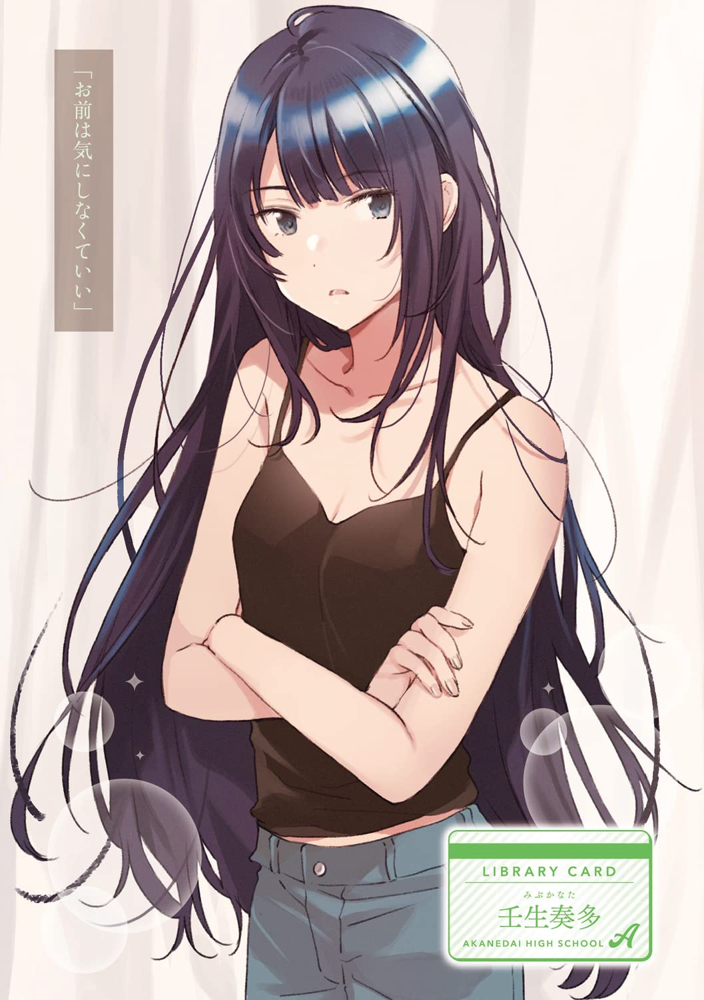
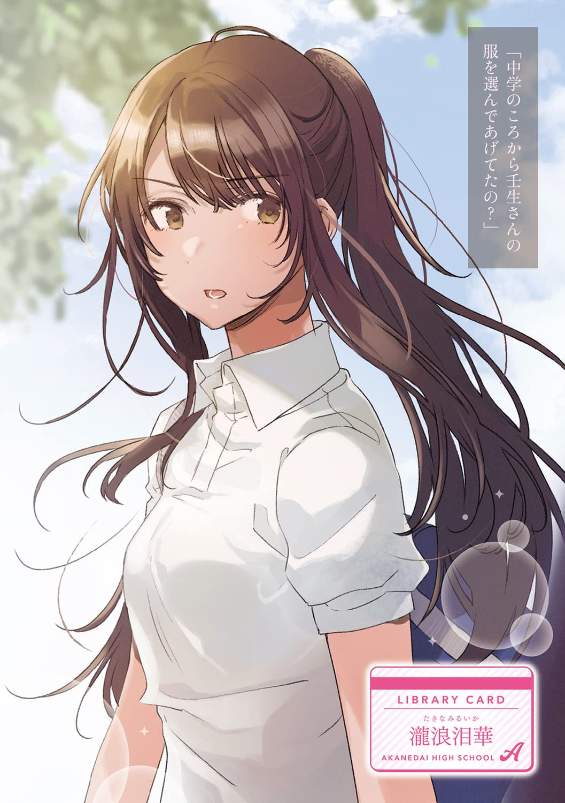
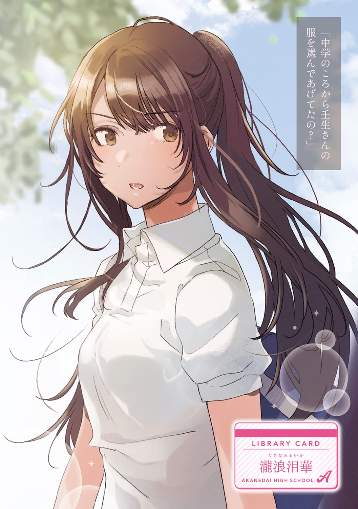
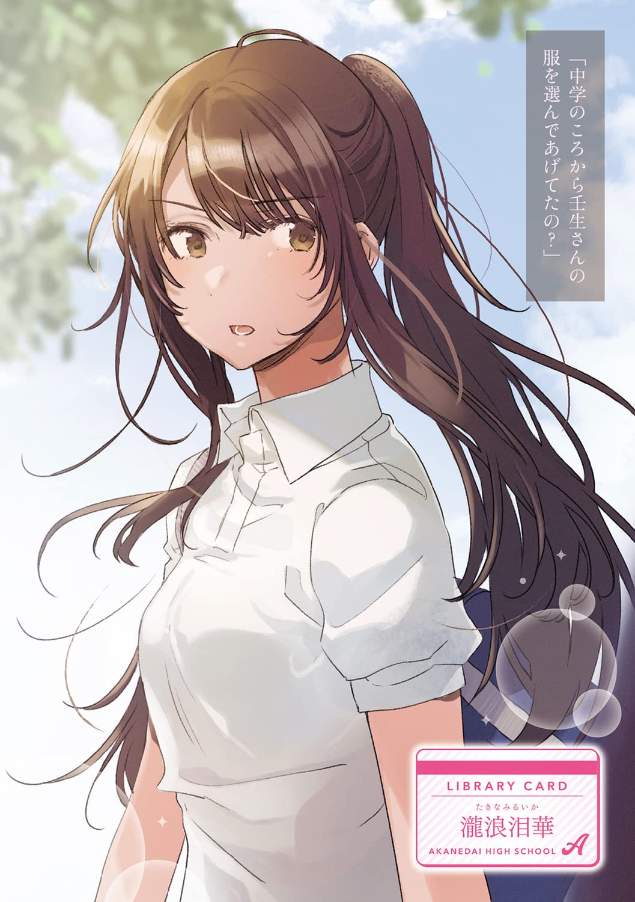
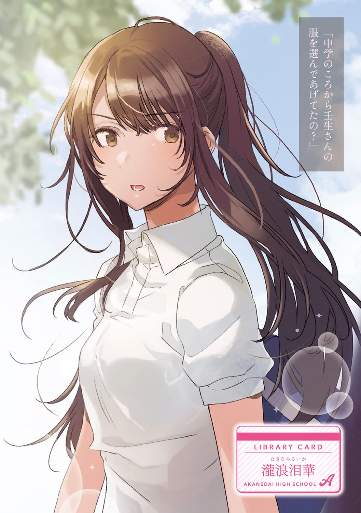

Ilustraciones de la novela

 




Novela en proceso
| Nombre alterno: | 放課後の図書室でお淑やかな彼女の譲れないラブコメ |
|---|---|
| Autor: | 九曜 |
| Generos: | Acción, Comedia, Ecchi, Fantasía, Romance, Vida escolar |
| Volumenes: | 3 |
| Activo: | si |
| Sinopsis: |
Makabe Shizuru Creció En Un Hogar Monoparental Y Se Quedó Sola Después De Que Su Madre Muriera En Un Accidente De Tráfico. Sin Embargo, La Noche Después Del Funeral, Apareció Un Hombre Que Decía Ser Su Padre Y Se Ofreció A Acoger A Shizuru. |


Esta disponible tanto pdf como epub
Descargar PDF Mega Descargar PDF Mediafire Descargar EPUB Mega Descargar EPUB Mediafire
Esta disponible tanto pdf como epub
Descargar PDF Mega Descargar PDF Mediafire Descargar EPUB Mega Descargar EPUB Mediafire
Esta disponible tanto pdf como epub
Descargar PDF Mega Descargar PDF Mediafire Descargar EPUB Mega Descargar EPUB Mediafire